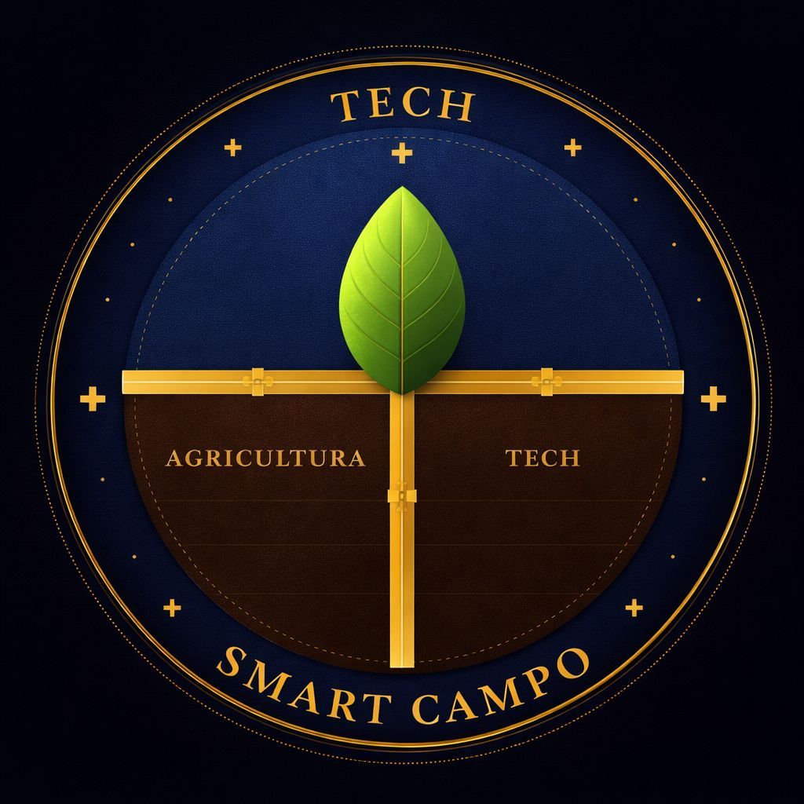
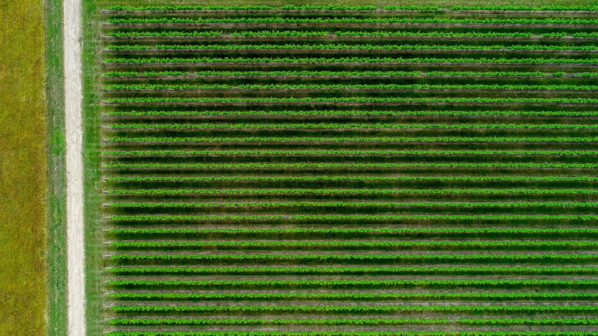
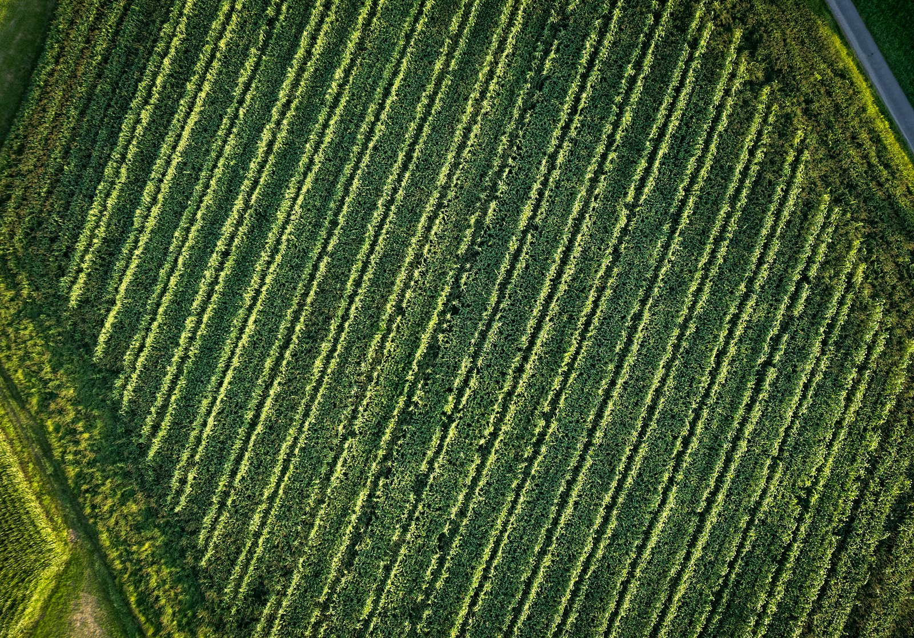

Enxergar o todo.
Drones sobrevoam as plantações e coletam imagens e dados em tempo real, ampliando a visão sobre a saúde do cultivo.

Uma nova perspectiva.
Tecnologia que enxerga o campo
antes do problema acontecer.

O futuro da agricultura
começa com outro olhar.
O Smart Campo nasce do encontro entre tecnologia e agricultura. Um projeto que propõe soluções de baixo custo e alta eficiência para produzir melhor, cuidar dos recursos naturais e reduzir perdas.
Conectamos drones, inteligência artificial e energia limpa para transformar imagens da lavoura em decisões mais precisas. Porque desenvolver o campo também é preservar o que vem depois.
Clima imprevisível. Recursos limitados.
Decisões que não podem chegar tarde.
Seca e excesso de chuvasA seca é apontada no estudo como a principal causa de perdas no Brasil, seguida pelo excesso de chuvas.
Falhas no manejoMáquinas mal reguladas, velocidade inadequada e distribuição irregular de sementes comprometem a produtividade.
de redução na produção
agrícola global até 2050.
Um olhar mais amplo sobre a lavoura.
Uma resposta mais precisa para quem produz.

Drones sobrevoam as plantações e coletam imagens e dados em tempo real, ampliando a visão sobre a saúde do cultivo.
A inteligência artificial analisa padrões para identificar pragas, falhas de irrigação e áreas sem plantio.
Relatórios transformam os dados em informações úteis para o produtor planejar o manejo e priorizar intervenções.
Melhorar a agricultura brasileira integrando tecnologia e campo, aumentando a produtividade e reduzindo perdas de forma acessível e sustentável.
Ser referência em tecnologia agrícola sustentável, aproximando a inovação da realidade de quem produz.
Duas frentes integradas na proposta:
monitoramento inteligente e energia limpa.
Drone com inteligência artificial embarcada e licença de software para coleta, análise de imagens e geração de relatórios.
Armazenamento de até 20 kWh para apoiar o carregamento dos equipamentos com energia limpa e reduzir a dependência da rede.
Ofertas e valores previstos no estudo acadêmico de 2026.
Da pequena propriedade à pesquisa, a agricultura precisa de informação que faça diferença no dia a dia.
Empresas mapeadas no estudo. As menções não representam parcerias ou contratos firmados.
DJI AgricultureDrones agrícolas
IBM WatsonInteligência artificial e dados
HanersunEnergia solar
SiemensSensores e automação
John Deere · Climate FieldView · Solinftec · XAG · Bosch
Uma visão de crescimento construída
sobre o estudo financeiro do projeto.
Projeções do Projeto Integrado Técnico — 2026. Valores estimados para fins acadêmicos, sujeitos às premissas do estudo; não representam resultados já realizados.
Finanças, tecnologia e operação.
Diferentes olhares para o mesmo futuro.
Financeiro
Diretor
Gerente
Coordenador Técnico
Coordenador Técnico
Coordenador Técnico
Gerente de Marketing e Comunicações
Coordenador Operacional de Implantação
Coordenador Operacional de Suporte
Encontre os quatro pares que conectam tecnologia e agricultura. Vire duas cartas por vez e descubra onde cada imagem está.
Use o toque, o mouse ou Tab e Enter para jogar. Cada dupla virada conta como uma jogada.
JOGADAS 0
PARES 0 / 4